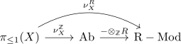
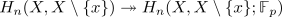
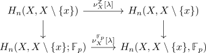

orientable manifold, Z and F_p orientable
Proposition
Let \(M\) be a manifold.
TFAE:
- $M$ is orientable
- $M$ is R-orientable
- $M$ is \(\mathbb{F}_p\)-orientable for some $p \in \mathbb{P}, p > 3$
Proof
1) $\implies$ 2)
Let $\nu_{X}^{\mathbb{Z}}$ be the orientation functor construction for the integers $\mathbb{Z}$. Then it follows that

commutes up to natural isomorphism.
Therefore each isomorphism $\nu_{X}^{\mathbb{Z}} \cong \underline{\mathbb{Z}}$ gets preserved under
2) $\implies$ 3)
Note that using the universal coefficient theorem for singular homology we obtain that

is surjective (cf. Four-Lemma of modules of epimorphisms)
Therefore any generator $\sigma_x \in H_n(X, X \setminus \{x\})$ of $H_n(X, X \setminus \{x\})$ as abelian group maps to a generator in $H_n(X, X \setminus \{x\};\mathbb{F}_p)$
This results in the diagram

Then $\nu^{\mathbb{Z}}([\lambda])(\sigma_x)$ is a generator lifting the same element in $H_n(X, X \setminus \{x\};\mathbb{F}_p)$ as $\nu_{X}^{\mathbb{Z}}([\lambda]) = \mathrm{id}$. For $p > 2$ suhc a generator is unque, as
3) $\implies$ 1)
Note that
functor out of groupoid and connected components where $B\pi_{\leq 1}$categorification of a group where the first $\cong$ is an isomorphism of categories and the second an equivalence